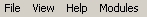
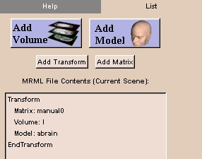
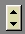

The Menu window provides menus for accessing the features of Slicer. A brief explanation of the Menu window will make it easier to refer to its parts later.
At the top of the Menu window there are File, View, Help, and Modules submenus.
|  |
Under the submenus is a group of buttons known as the Main menu.

|
Clicking a button on the Main menu will take you to the panel associated with that Slicer feature.
|  |
There are tabs along the top of each panel. The leftmost tab on each panel is the Help for that feature.
You can toggle a scrollbar on and off for the panel with this button.
|  |